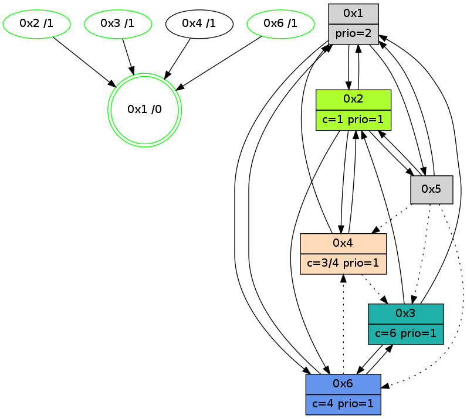

>> << IDX [start] -100 -25 -5 +0 +5 +25 +100 [855.004024982]
 Previous packets
----------------------------------------------------------------------
850.020443 beacon01(adaf) #0 coord=01,02,05,03,04,06 cycle=432.0ms assoc
-- color-indic=1 64 78 53
850.030403 beacon02(adaf) #0 coord=01,02,05,03,04,06 cycle=432.0ms assoc 64 29 ac
850.040405 beacon05(adaf) #0 coord=01,02,05,03,04,06 cycle=432.0ms assoc 64 8f 86
850.050404 beacon03(adaf) #0 coord=01,02,05,03,04,06 cycle=432.0ms assoc 64 13 a2
850.060406 beacon04(adaf) #0 coord=01,02,05,03,04,06 cycle=432.0ms assoc 64 b5 88
850.070404 beacon06(adaf) #0 coord=01,02,05,03,04,06 cycle=432.0ms assoc 64 c1 94
850.082948 [Color(6) seq=80 @0:0 color=4 prio=1 c=0,1,2,5,6;3]
850.086695 [Color(3) seq=50 @0:0 color=6 prio=1 c=1,3,4,5;0,2]
----------------------------------------------------------------------
850.512552 beacon01(adaf) #0 coord=01,02,05,03,04,06 cycle=432.0ms assoc
-- color-indic=1 64 35 54
850.522513 beacon02(adaf) #0 coord=01,02,05,03,04,06 cycle=432.0ms assoc 64 64 ab
850.532514 beacon05(adaf) #0 coord=01,02,05,03,04,06 cycle=432.0ms assoc 64 c2 81
850.542514 beacon03(adaf) #0 coord=01,02,05,03,04,06 cycle=432.0ms assoc 64 5e a5
850.552514 beacon04(adaf) #0 coord=01,02,05,03,04,06 cycle=432.0ms assoc 64 f8 8f
850.562516 beacon06(adaf) #0 coord=01,02,05,03,04,06 cycle=432.0ms assoc 64 8c 93
850.574208 [Hello(4): seq=655 sym=2,1,6,3 sysInfo=hasWarning stat=2:9,3,12,2/1:8,13,5,0/6:2,0,1,0/3:1,4,13,3]
850.578371 [Hello(1): seq=554 sym=3,4,6,5 sysInfo=hasWarning,coloring-mode-on,ColoringModeRequestCalled stat=3:0,4,0,0/4:8,4,14,2/6:14,0,0,2/5:0,0,0,0]
850.580862 [STC(1) #0.86 new-neigh,tree-change,inconsistent-stability,stable,to-color d=0]
850.582818 [Color(1) seq=81 @0:0 prio=5 c=1,4,6;0,2,3,5]
850.584859 [Hello(2): seq=1143 sym=6,4,1,3,5 sysInfo=hasWarning,coloring-mode-on,ColoringModeIndicationCalled stat=6:2,10,14,4/4:8,3,10,2/1:7,1,3,1/3:1,12,9,1/5:0,0,0,0]
850.587803 [Color(2) seq=79 @0:0 color=1 prio=1 c=0,2,3,4,5,6]
----------------------------------------------------------------------
851.004662 beacon01(adaf) #0 coord=01,02,05,03,04,06 cycle=432.0ms assoc
-- color-indic=1 64 f1 3b
851.014622 beacon02(adaf) #0 coord=01,02,05,03,04,06 cycle=432.0ms assoc 64 a0 c4
851.024623 beacon05(adaf) #0 coord=01,02,05,03,04,06 cycle=432.0ms assoc 64 06 ee
851.034623 beacon03(adaf) #0 coord=01,02,05,03,04,06 cycle=432.0ms assoc 64 9a ca
851.044623 beacon04(adaf) #0 coord=01,02,05,03,04,06 cycle=432.0ms assoc 64 3c e0
851.054623 beacon06(adaf) #0 coord=01,02,05,03,04,06 cycle=432.0ms assoc 64 48 fc
851.066182 [STC(4)->1 #0.86 new-neigh,tree-change,inconsistent-stability,to-color d=1]
851.068270 [STC(3)->1 #0.86 new-neigh,tree-change,inconsistent-stability,stable,to-color d=1]
851.070866 [Color(3) seq=51 @0:0 color=6 prio=1 c=1,3,4,5;0,2]
851.073473 [TreeStatus(5)-.->1 #0.86 new-neigh,tree-change,inconsistent-stability,stable child=1]
----------------------------------------------------------------------
851.496770 beacon01(adaf) #0 coord=01,02,05,03,04,06 cycle=432.0ms assoc
-- color-indic=1 64 bd 8b
851.506732 beacon02(adaf) #0 coord=01,02,05,03,04,06 cycle=432.0ms assoc 64 ec 74
851.516733 beacon05(adaf) #0 coord=01,02,05,03,04,06 cycle=432.0ms assoc 64 4a 5e
851.526732 beacon03(adaf) #0 coord=01,02,05,03,04,06 cycle=432.0ms assoc 64 d6 7a
851.536731 beacon04(adaf) #0 coord=01,02,05,03,04,06 cycle=432.0ms assoc 64 70 50
851.546732 beacon06(adaf) #0 coord=01,02,05,03,04,06 cycle=432.0ms assoc 64 04 4c
851.558441 [Hello(4): seq=656 sym=2,1,6,3 sysInfo=hasWarning stat=2:10,4,12,2/1:9,14,6,0/6:2,0,1,0/3:1,4,13,3]
851.560974 [Hello(2): seq=1144 sym=6,4,1,3,5 sysInfo=hasWarning,coloring-mode-on,ColoringModeIndicationCalled stat=6:2,10,14,4/4:8,3,11,2/1:7,1,3,1/3:1,12,9,1/5:0,0,0,1]
851.564248 [Color(2) seq=80 @0:0 color=1 prio=1 c=0,2,3,4,5,6]
851.567134 [Color(1) seq=82 @0:0 prio=5 c=1,4,6;0,2,3,5]
----------------------------------------------------------------------
851.988879 beacon01(adaf) #0 coord=01,02,05,03,04,06 cycle=432.0ms assoc
-- color-indic=1 64 79 e4
851.998843 beacon02(adaf) #0 coord=01,02,05,03,04,06 cycle=432.0ms assoc 64 28 1b
852.008841 beacon05(adaf) #0 coord=01,02,05,03,04,06 cycle=432.0ms assoc 64 8e 31
852.018841 beacon03(adaf) #0 coord=01,02,05,03,04,06 cycle=432.0ms assoc 64 12 15
852.028841 beacon04(adaf) #0 coord=01,02,05,03,04,06 cycle=432.0ms assoc 64 b4 3f
852.038841 beacon06(adaf) #0 coord=01,02,05,03,04,06 cycle=432.0ms assoc 64 c0 23
852.051358 [Color(6) seq=82 @0:0 color=4 prio=1 c=0,1,2,5,6;3]
852.055138 [Color(3) seq=52 @0:0 color=6 prio=1 c=1,3,4,5;0,2]
----------------------------------------------------------------------
852.480986 beacon01(adaf) #0 coord=01,02,05,03,04,06 cycle=432.0ms assoc
-- color-indic=1 64 5c d9
852.490947 beacon02(adaf) #0 coord=01,02,05,03,04,06 cycle=432.0ms assoc 64 0d 26
852.500948 beacon05(adaf) #0 coord=01,02,05,03,04,06 cycle=432.0ms assoc 64 ab 0c
852.510949 beacon03(adaf) #0 coord=01,02,05,03,04,06 cycle=432.0ms assoc 64 37 28
852.520948 beacon04(adaf) #0 coord=01,02,05,03,04,06 cycle=432.0ms assoc 64 91 02
852.530949 beacon06(adaf) #0 coord=01,02,05,03,04,06 cycle=432.0ms assoc 64 e5 1e
852.542678 [Hello(4): seq=657 sym=2,1,3 sysInfo=hasWarning stat=2:11,5,12,2/1:9,15,6,0/3:1,5,13,3]
852.544596 [Hello(1): seq=556 sym=2,3,6,5 sysInfo=hasWarning,coloring-mode-on,ColoringModeRequestCalled stat=2:0,1,0,0/3:0,5,0,0/6:0,0,1,2/5:0,0,0,1]
852.547885 [Hello(2): seq=1145 sym=6,4,1,3,5 sysInfo=hasWarning,coloring-mode-on,ColoringModeIndicationCalled stat=6:3,10,14,4/4:8,3,11,2/1:7,2,3,1/3:1,13,9,1/5:0,0,0,1]
852.551387 [Color(1) seq=83 @0:0 prio=5 c=1,4,6;0,2,3,5]
852.555438 [Color(2) seq=81 @0:0 color=1 prio=1 c=0,2,3,4,5,6]
----------------------------------------------------------------------
852.973096 beacon01(adaf) #0 coord=01,02,05,03,04,06 cycle=432.0ms assoc
-- color-indic=1 64 98 b6
852.983057 beacon02(adaf) #0 coord=01,02,05,03,04,06 cycle=432.0ms assoc 64 c9 49
852.993057 beacon05(adaf) #0 coord=01,02,05,03,04,06 cycle=432.0ms assoc 64 6f 63
853.003056 beacon03(adaf) #0 coord=01,02,05,03,04,06 cycle=432.0ms assoc 64 f3 47
853.013058 beacon04(adaf) #0 coord=01,02,05,03,04,06 cycle=432.0ms assoc 64 55 6d
853.023058 beacon06(adaf) #0 coord=01,02,05,03,04,06 cycle=432.0ms assoc 64 21 71
853.035576 [Color(6) seq=83 @0:0 color=4 prio=1 c=0,1,2,5,6;3]
853.039363 [Color(3) seq=53 @0:0 color=6 prio=1 c=1,3,4,5;0,2]
853.045857 [STC(1) #0.87 new-neigh,tree-change,inconsistent-stability,stable,to-color d=0]
----------------------------------------------------------------------
853.465203 beacon01(adaf) #0 coord=01,02,05,03,04,06 cycle=432.0ms assoc
-- color-indic=1 64 d4 06
853.475164 beacon02(adaf) #0 coord=01,02,05,03,04,06 cycle=432.0ms assoc 64 85 f9
853.485164 beacon05(adaf) #0 coord=01,02,05,03,04,06 cycle=432.0ms assoc 64 23 d3
853.495165 beacon03(adaf) #0 coord=01,02,05,03,04,06 cycle=432.0ms assoc 64 bf f7
853.505165 beacon04(adaf) #0 coord=01,02,05,03,04,06 cycle=432.0ms assoc 64 19 dd
853.515165 beacon06(adaf) #0 coord=01,02,05,03,04,06 cycle=432.0ms assoc 64 6d c1
853.527143 [Hello(4): seq=658 sym=2,1 asym=3 sysInfo=hasWarning stat=2:12,6,12,2/1:10,0,7,0/3:1,6,13,3]
853.529683 [Hello(2): seq=1146 sym=6,4,1,3,5 sysInfo=hasWarning,coloring-mode-on,ColoringModeIndicationCalled stat=6:3,10,14,4/4:8,3,11,2/1:7,2,4,1/3:1,14,9,1/5:0,0,0,1]
853.534690 [STC(2)->1 #0.87 new-neigh,tree-change,inconsistent-stability,stable,to-color d=1]
853.537304 [Color(2) seq=82 @0:0 color=1 prio=1 c=0,2,3,4,5,6]
853.541432 [STC(6)->1 #0.87 new-neigh,tree-change,inconsistent-stability,stable,to-color d=1]
853.549965 [STC(4)->1 #0.87 new-neigh,tree-change,inconsistent-stability,to-color d=1]
----------------------------------------------------------------------
853.957311 beacon01(adaf) #0 coord=01,02,05,03,04,06 cycle=432.0ms assoc
-- color-indic=1 64 10 69
853.967271 beacon02(adaf) #0 coord=01,02,05,03,04,06 cycle=432.0ms assoc 64 41 96
853.977272 beacon05(adaf) #0 coord=01,02,05,03,04,06 cycle=432.0ms assoc 64 e7 bc
853.987272 beacon03(adaf) #0 coord=01,02,05,03,04,06 cycle=432.0ms assoc 64 7b 98
853.997272 beacon04(adaf) #0 coord=01,02,05,03,04,06 cycle=432.0ms assoc 64 dd b2
854.007273 beacon06(adaf) #0 coord=01,02,05,03,04,06 cycle=432.0ms assoc 64 a9 ae
854.019804 [Color(6) seq=84 @0:0 color=4 prio=1 c=0,1,2,5,6;3]
854.023572 [Color(3) seq=54 @0:0 color=6 prio=1 c=1,3,4,5;0,2]
854.028258 [Color(1) seq=84 @0:0 prio=2 c=1;0,2,3,4,5,6]
----------------------------------------------------------------------
854.449418 beacon01(adaf) #0 coord=01,02,05,03,04,06 cycle=432.0ms assoc
-- color-indic=1 64 5d 6e
854.459380 beacon02(adaf) #0 coord=01,02,05,03,04,06 cycle=432.0ms assoc 64 0c 91
854.469380 beacon05(adaf) #0 coord=01,02,05,03,04,06 cycle=432.0ms assoc 64 aa bb
854.479379 beacon03(adaf) #0 coord=01,02,05,03,04,06 cycle=432.0ms assoc 64 36 9f
854.489381 beacon04(adaf) #0 coord=01,02,05,03,04,06 cycle=432.0ms assoc 64 90 b5
854.499380 beacon06(adaf) #0 coord=01,02,05,03,04,06 cycle=432.0ms assoc 64 e4 a9
854.511059 [Hello(4): seq=659 sym=2,1 asym=3 sysInfo=hasWarning stat=2:12,6,12,2/1:10,1,7,0/3:1,7,13,3]
854.514865 [Hello(1): seq=558 sym=2,6,5 sysInfo=hasWarning,coloring-mode-on,ColoringModeRequestCalled stat=2:0,3,1,0/6:1,0,2,2/5:0,0,0,1]
854.518103 [Hello(2): seq=1147 sym=6,4,1,5 sysInfo=hasWarning,coloring-mode-on,ColoringModeIndicationCalled stat=6:4,10,15,4/4:8,3,12,2/1:7,3,4,1/5:0,0,0,1]
854.521230 [Color(2) seq=83 @0:0 color=1 prio=1 c=0,2,3,4,5,6]
----------------------------------------------------------------------
854.941528 beacon01(adaf) #0 coord=01,02,05,03,04,06 cycle=432.0ms assoc
-- color-indic=1 64 99 01
854.951489 beacon02(adaf) #0 coord=01,02,05,03,04,06 cycle=432.0ms assoc 64 c8 fe
854.961489 beacon05(adaf) #0 coord=01,02,05,03,04,06 cycle=432.0ms assoc 64 6e d4
854.971490 beacon03(adaf) #0 coord=01,02,05,03,04,06 cycle=432.0ms assoc 64 f2 f0
854.981491 beacon04(adaf) #0 coord=01,02,05,03,04,06 cycle=432.0ms assoc 64 54 da
854.991491 beacon06(adaf) #0 coord=01,02,05,03,04,06 cycle=432.0ms assoc 64 20 c6